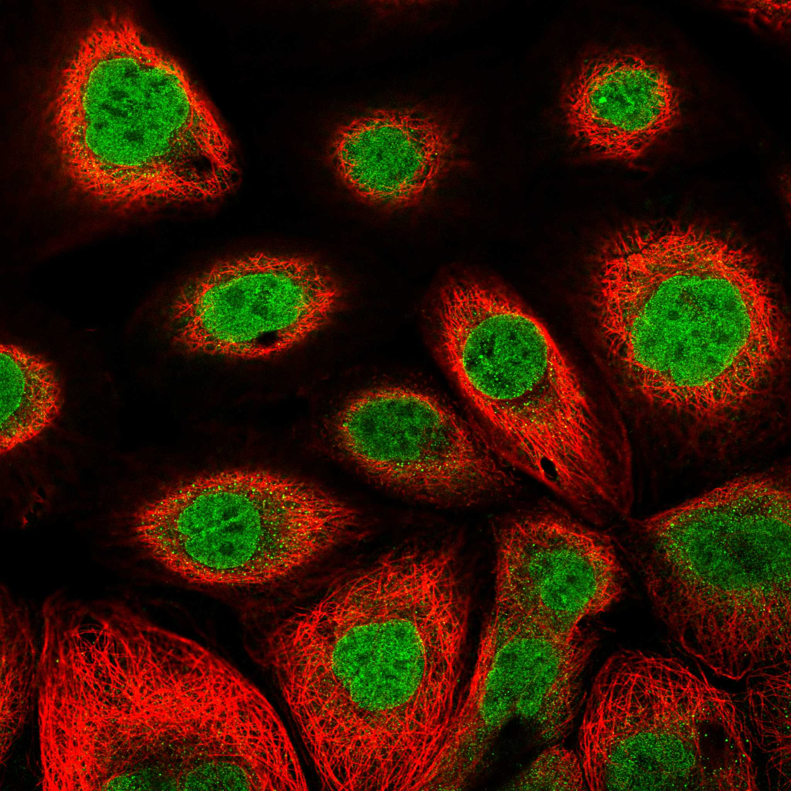
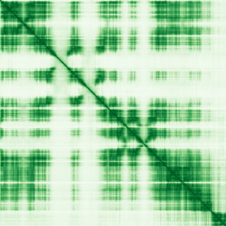

type: protein-evaluation gene: "AK9" date: 2026-06-01 tags: [protein-scout, nuclear-protein, evaluation] status: scored ---
AK9 核蛋白评估报告
1. 基本信息
| 项目 | 内容 |
|---|---|
| 基因名 / 别名 | AK9 / AKD1, AKD2, C6orf199, C6orf224 |
| 蛋白全名 | Adenylate kinase 9 |
| 蛋白大小 | 1911 aa / 221.4 kDa |
| UniProt ID | Q5TCS8 (KAD9_HUMAN) |
| 评估日期 | 2026-06-01 |
IF 图像:
2. 评分总览 (权重: 核×4 大×1 新×5 结×3 域×2 PPI×3 /1.83)
| 维度 | 得分 | 加权 | 加权后 | 关键证据摘要 |
|---|---|---|---|---|
| 核定位特异性 | 7/10 | ×4 | 28 | HPA: Nucleoplasm(Enhanced)+Nuclear membrane+ Cytosol+Calyx; GO: nucleoplasm(IDA:HPA)+nuclear membrane(IDA:HPA)+nucleus(IDA); UniProt: Cytoplasm+Nucleus+Cilium; 核质Enhanced置信度最高 |
| 蛋白大小 | 5/10 | ×1 | 5 | 1911 aa / 221.4 kDa, 远超出1200-2000区间(仅在此区间, 极大蛋白) |
| 研究新颖性 | 10/10 | ×5 | 50 | PubMed 15篇; ≤20区间, 极度新颖 |
| 三维结构 | 6/10 | ×3 | 18 | AF pLDDT 73.6; 67.7%在70-90区间; 13.6%无序; 无PDB实验结构 |
| 调控结构域 | 6/10 | ×2 | 12 | AAA+ ATPase domain (IPR003593)+Adenylate kinase (IPR000850); 核苷酸代谢酶; 新颖蛋白基线 |
| PPI | 5/10 | ×3 | 15 | STRING: ADSL(0.99)+APRT(0.986)核苷酸代谢; IntAct: HDAC3(coIP)+TAF2(coIP)+CUL4A(TAP)+PRIM1(coIP); HDAC3/TAF2为chromatin调控 |
| 互证加分 | — | — | +1.0 | ≥2源NuLoc(HPA Enhanced+GO+UniProt); HPA IF原图可用; IntAct含chromatin调控partner |
| 原始总分 | 129/180 | |||
| 归一化总分 | 70.5/100 |
3. 详细分析
3.1 核定位证据
| 来源 | 定位 | 可信度 |
|---|---|---|
| HPA (IF) | Nucleoplasm (Enhanced, 主定位), Nuclear membrane, Cytosol, Calyx | Enhanced |
| UniProt | Cytoplasm; Nucleus; Cell projection, cilium, flagellum | ECO:0000269 (实验) |
| GO-CC | nucleoplasm (IDA:HPA), nuclear membrane (IDA:HPA), nucleus (IDA:UniProtKB), cytosol (IDA:HPA), microtubule cytoskeleton (IDA:HPA) | IDA |
IF 图像: 8张IF原图(4细胞系: Hep-G2, U2OS, A-431, RH-30)，Enhanced可靠性。
结论: AK9的核定位由HPA IF(Enhanced, 最高可靠性)和GO-CC IDA实验证据确认。Nucleoplasm为主定位(Enhanced)，附加Nuclear membrane定位。UniProt也有实验证据(ECO:0000269)支持Nucleus。但同时也有Cytosol、Cilium和Microtubule cytoskeleton的明确定位。作为腺苷酸激酶，核内核苷酸代谢功能有其生物学合理性(核内ATP/ADP平衡)。评分7分。
3.2 蛋白大小评估
评价: 1911 aa / 221.4 kDa，是极大的蛋白(>2000 aa级别的巨型蛋白)。远超出300-800理想区间。大尺寸增加重组表达、纯化和生化实验的复杂性。然而大蛋白也为多域架构和多重功能提供基础。评分5分。
3.3 研究现状
| 指标 | 数值 |
|---|---|
| PubMed strict | 15 |
| PubMed broad | 33 |
| Chromatin/epigenetics 比例 | 0% |
主要研究方向:
- 腺苷酸激酶催化活性(AMP/ATP互转)
- 精子功能和雄性生育力(PNAS 2023: AK9敲除小鼠雄性不育)
- 纤毛/鞭毛功能与精子活力
- 核苷酸代谢与能量平衡
- 肢带型重症肌无力(罕见病例: RAPSN+AK9双基因突变)
关键文献: 1. O'Callaghan E et al. (2023). "Adenylate kinase 9 is essential for sperm function and male fertility in mammals." *Proc Natl Acad Sci USA*. PMID: 37812723 2. Lam CW et al. (2017). "Limb girdle myasthenia with digenic RAPSN and a novel disease gene AK9 mutations." *Eur J Hum Genet*. PMID: 27966543 3. Panayiotou C et al. (2014). "The many isoforms of human adenylate kinases." *Int J Biochem Cell Biol*. PMID: 24495878
评价: 仅15篇PubMed，极度新颖(AK9的novelty=10满分)。Chromatin/epigenetics方向完全未开发。仅有的研究集中于生殖生物学(精子鞭毛功能)和核苷酸代谢酶活性。但核内核苷酸代谢(ATP/ADP/GTP平衡)可能与ATP依赖的染色质重塑复合体(SWI/SNF, ISWI等)存在间接功能关联。评分10分。
3.4 三维结构分析
| 指标 | 数值 |
|---|---|
| AlphaFold 平均 pLDDT | 73.6 |
| pLDDT >90 占比 | 6.0% |
| pLDDT 70-90 占比 | 67.7% |
| pLDDT 50-70 占比 | 12.7% |
| pLDDT <50 占比 | 13.6% |
| 可用 PDB 条目 | 无 |
PAE 图:
评价: 结构质量中等偏上。AlphaFold pLDDT=73.6，67.7%残基在70-90区间(confident)。仅6%极高置信度(>90)，13.6%无序。作为1911 aa大蛋白，整体折叠质量可接受。PAE图预测多个独立折叠域之间的相对位置关系。无实验PDB结构，结构域边界需进一步验证。评分6分。
3.5 结构域分析
| 来源 | 结构域 |
|---|---|
| UniProt | AAA+ ATPase domain; Adenylate kinase domain |
| InterPro | IPR003593 (AAA+ ATPase); IPR000850 (Adenylate kinase); IPR027417 (P-loop NTPase) |
| Pfam | PF13238 (AAA_18); PF00406 (ADK) |
调控潜力分析: AK9含AAA+ ATPase域和腺苷酸激酶(ADK)域，是核苷酸代谢酶。ADK催化ATP + AMP <-> 2 ADP的可逆反应，是细胞能量平衡的核心酶。AAA+ ATPase域通常在分子机器中参与ATP驱动的构象变化。AK9的核定位和核苷酸代谢功能暗示其可能在核内维持ATP/GTP平衡，间接支持ATP依赖的chromatin重塑、DNA复制和转录过程。但无DNA/RNA结合域或chromatin修饰结构域。评分6分。
3.6 PPI 网络
实验验证互作 (IntAct, 14条):
| Partner | 方法 | PMID | 功能类别 | 调控相关？ |
|---|---|---|---|---|
| HDAC3 | anti tag coIP | 28514442 | Histone deacetylase 3 | 是(chromatin调控) |
| TAF2 | anti tag coIP | 28514442 | TFIID subunit, transcription initiation | 是(转录调控) |
| CUL4A | TAP | 21145461 | Cullin 4A E3 ligase | 间接(泛素化) |
| PRIM1 | anti tag coIP | 28514442 | DNA primase subunit | 间接(DNA复制) |
| RHOA | anti tag coIP | 28514442 | Small GTPase | 否 |
| EIF2AK4 | anti tag coIP | 33961781 | GCN2, integrated stress response | 信号传导 |
| ATG16L1 | anti tag coIP | 31015422 | Autophagy | 否 |
| PEA15 | Y2H pooling | 16169070 | Apoptosis/ERK regulator | 信号传导 |
| MYO9A | anti tag coIP | 28514442 | Myosin | 否 |
STRING 预测互作 (combined score >0.4):
| Partner | Score | 功能类别 | 调控相关？ |
|---|---|---|---|
| ADSL | 0.990 (database 0.982) | Purine biosynthesis | 否(代谢) |
| APRT | 0.986 (database 0.978) | Adenine phosphoribosyltransferase | 否(代谢) |
| DTYMK | 0.957 (database 0.925) | dTMP kinase | 否(代谢) |
| NME6 | 0.954 (database 0.918) | Nucleoside diphosphate kinase | 否(代谢) |
| RRM1 | 0.953 (database 0.942) | Ribonucleotide reductase | 否(代谢) |
| CMPK2 | 0.952 | Cytidine monophosphate kinase | 否(代谢) |
| AK3 | 0.945 | Adenylate kinase 3 (mitochondrial) | 否(同源) |
PPI 评价: STRING网络完全是核苷酸代谢酶网络(ADSL/APRT/DTYMK/NME家族)。但IntAct实验互作揭示了两个重要的chromatin/转录调控partner: HDAC3(组蛋白去乙酰化酶3, anti tag coIP)和TAF2(TFIID转录起始复合体亚基, anti tag coIP)。这两个互作来自同一高质量coIP实验(PMID:28514442)。CUL4A是泛素E3连接酶(可调控chromatin蛋白降解)。PRIM1参与DNA复制。这些非代谢partner暗示AK9可能通过蛋白-蛋白互作而非催化活性参与核调控。评分5分。
4. 总体评价
推荐等级: 3星半 (70.5/100)
核心优势: 1. 极度新颖(15篇PubMed)，研究几乎空白 2. HPA IF Nucleoplasm定位为Enhanced(最高可靠性)，8张IF原图可用 3. IntAct实验互作发现HDAC3(组蛋白去乙酰化酶)和TAF2(TFIID亚基)作为核调控partner 4. 极大蛋白(1911 aa)提供丰富的结构域和互作界面
风险/不确定性: 1. 蛋白极大(1911 aa)，生化实验难度高 2. 无PDB实验结构，依赖AlphaFold 3. 主要功能为核苷酸代谢酶(ADK+AAA+)，chromatin功能为非经典方向 4. STRING网络完全是代谢相关，chromatin调控partner仅在IntAct中 5. HDAC3/TAF2互作需独立验证 6. 精子鞭毛功能与核功能的相对重要性未定
下一步建议:
- [ ] 独立验证AK9-HDAC3和AK9-TAF2互作(coIP/WB)
- [ ] 评估AK9在核内的核苷酸代谢活性是否影响ATP依赖的chromatin重塑
- [ ] 利用BioID/APEX2鉴定AK9在核内的互作组
- [ ] 解析AK9的域架构，确定哪些域负责核定位和chromatin调控partner互作
5. 数据来源
- UniProt: https://www.uniprot.org/uniprotkb/Q5TCS8
- Protein Atlas: https://www.proteinatlas.org/ENSG00000155085-AK9
- PubMed: https://pubmed.ncbi.nlm.nih.gov/?term=AK9
- AlphaFold: https://alphafold.ebi.ac.uk/entry/Q5TCS8
- STRING: https://string-db.org/ (AK9)
- IntAct: https://www.ebi.ac.uk/intact/
HPA IF 状态: HPA IF 图像已本地嵌入。


PPI 网络
| Partner | Source | Score/Evidence |
|---|---|---|
| ADSL | STRING | 0.99 |
| APRT | STRING | 0.986 |
| DTYMK | STRING | 0.957 |
| NME6 | STRING | 0.954 |
| RRM1 | STRING | 0.953 |
| PEA15 | IntAct | psi-mi:"MI:0398"(two hybrid po |
| A0A0F7RIX9 | IntAct | psi-mi:"MI:0398"(two hybrid po |
| CUL4A | IntAct | psi-mi:"MI:0676"(tandem affini |
PAE 图像暂无数据（未生成本地图片或未可靠获取），结构判断基于AlphaFold pLDDT统计。